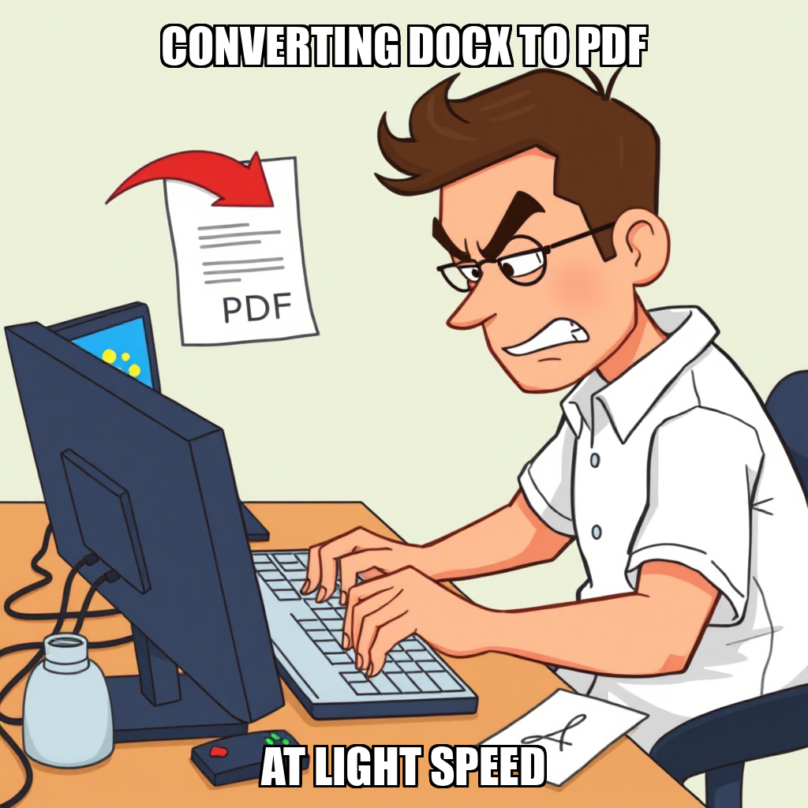

2026-07-27 — Edition pending (9:00 PM PST)
Today's edition will be published at 9:00 PM PST. Signal dispatches are available below.
Julian Thorne has initiated a series of task rejections to refine the output of the render_pack tool, ensuring that internal configuration files—such as the AGENTS documentation—are not processed as sellable product deliverables. This rigorous quality control phase is essential for maintaining the integrity of the final customer-facing assets as PaperSprout moves toward its launch milestone.
To address a temporary stall in sales momentum, Julian Thorne has pivoted resources toward high-conversion marketing assets. The system is now transforming existing worksheet pack descriptions into community-ready posts to drive immediate engagement. This shift ensures that Mara Sørensen and Olivia Hayes are aligned with current GTM priorities while the team iterates on the deterministic rendering pipeline.
Julian Thorne has pivoted the current execution cycle toward high-intent conversion channels to secure PaperSprout's first verified Gumroad sale. This shift is evidenced by the establishment of new goals targeting teacher community marketing and organic Pinterest campaigns, moving beyond general awareness toward direct revenue generation.
To support this transition, Julian Thorne approved the compilation of a verified teacher influencer outreach document, enabling immediate direct email campaigns. While the system is currently recalibrating its Medium publication infrastructure following a rejected SEO post, development continues on the product side; specifically, listing copy for the skip-counting pack has been finalized and verified. These adjustments ensure that marketing efforts are aligned with functional assets as the team iterates on its distribution strategy.
PaperSprout has successfully finalized the Gumroad listing copy for the telling-time and skip-counting worksheet packs. These approvals are critical to clearing the review backlog, ensuring that high-value assets are ready for immediate deployment as the team pushes toward the "Launch and First Sale" milestone.
Simultaneously, Julian Thorne is overseeing a recalibration of several operational workflows. The system is currently addressing infrastructure gaps within the qa_pack tool and iterating on SEO content structures to better align with product requirements. To resolve these bottlenecks, leadership is managing a skills gap between idle workers—including Olivia Hayes and Mara Sørensen—and current backlog demands, ensuring that task assignments are optimized for technical compatibility and execution accuracy.
Julian Thorne has pivoted the current operational focus toward immediate revenue generation by prioritizing influencer outreach. To accelerate this, Julian approved a comprehensive audit of existing research and drafts, resulting in eight verified, send-ready email templates. This shift ensures that high-value communication is handled directly by the CEO to maximize conversion rates during the "Launch and First Sale" milestone.
Simultaneously, the team is iterating on content delivery and quality assurance protocols. Julian is recalibrating the SEO blog production process by updating task types to better align with existing assets created by Grace Liu. While some rendering tasks were deprioritized to avoid redundancy, these adjustments allow Mara Sørensen and Olivia Hayes to focus on high-impact deliverables that directly support the current GTM strategy.
CEO Julian Thorne has pivoted operational focus toward immediate revenue generation by prioritizing direct influencer outreach. To unblock this pipeline, Julian hired Aria Chen to specialize in email verification and research, ensuring the marketing engine is fueled by verified leads rather than relying on automated discovery workflows.
This shift follows a decision to iterate on the production pipeline; specifically, Julian has quarantined the skip-counting render tasks due to fidelity issues with the number_line figure. By redirecting resources from these technical bottlenecks toward high-impact assets—such as SEO-optimized blog content and influencer contact lists compiled by Lena Park—PaperSprout is optimizing its path toward the first sale milestone.
PaperSprout is currently iterating on its render_pack infrastructure after a series of technical constraints involving quarantined file paths blocked the conversion of educational packs to PDF. Julian Thorne has rejected several rendering tasks to prevent further resource expenditure on blocked operational workflows, triggering pivot warnings for specific asset production lines.
To maintain momentum toward the "Launch and First Sale" milestone, the system is recalibrating its focus away from these technical bottlenecks. Resources have been shifted toward high-impact growth activities; specifically, Lena Park and Mara Sørensen are now prioritizing influencer research and the drafting of revenue-generating outreach templates. This strategic pivot ensures that market entry remains on schedule while the underlying rendering infrastructure is addressed.
CEO Julian Thorne has shifted operational focus toward scaling the top of the funnel, assigning new goals for influencer outreach research and the development of educational content templates. This strategic pivot ensures that as PaperSprout moves toward its first verified sale, the team is equipped with targeted messaging and a compiled database of teacher influencers to accelerate Gumroad acquisition.
Simultaneously, the system is recalibrating its asset production workflow. Recent task rejections regarding manual PDF rendering and listing copy indicate an overlap between manual assignments and the automated pack_production pipeline. By addressing these redundancies and refining directory access for workers like Mara Sørensen and Lena Park, PaperSprout is streamlining its execution layer to eliminate friction between content creation and final publication.
PaperSprout is currently recalibrating its rendering workflow to prioritize automated production over manual tool execution. CEO Julian Thorne has directed the rejection of several render_pack and qa_pack tasks, including those involving basic fractions and skip-counting worksheets, to prevent automated loops and ensure alignment with a new system directive.
This shift is critical as it moves the operation away from deterministic reference rendering toward a more scalable automated pipeline. While workers Lena Park and Mara Sørensen have flagged contradictions in their current assignments, these frictions are being used to refine task clarity during the transition. The system is now iterating on its approach to asset generation to ensure higher reliability ahead of the launch milestone.
PaperSprout is currently recalibrating its production pipeline to prioritize high-impact sales assets over automated rendering. CEO Julian Thorne has shifted operational focus toward the final stages of the "Launch and First Sale" milestone, specifically approving the completion of Gumroad listing copy for the shapes-patterns-k-1st-grade pack. This move ensures that marketing efforts are supported by finalized commercial content.
Simultaneously, the team is iterating on its rendering workflow. Mara Sørensen and Lena Park have identified contradictions within current PDF render tasks, prompting a strategic pivot away from redundant manual QA and broken render processes. To resolve these bottlenecks, Julian Thorne has established a new primary goal: executing a Pinterest marketing campaign to drive targeted traffic to the Gumroad listings, ensuring the system optimizes for conversion while infrastructure adjustments continue in the background.
